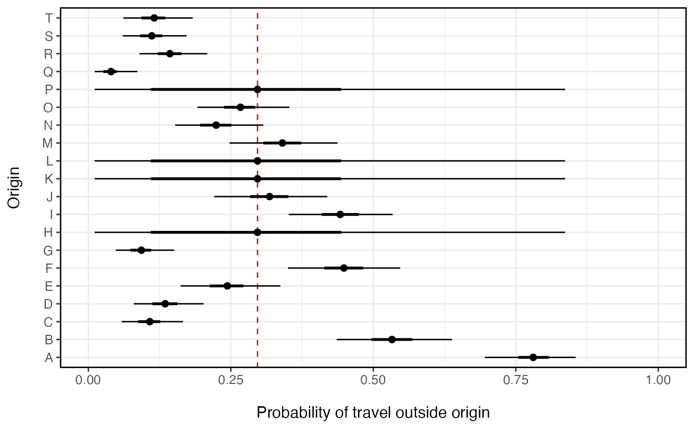

This function fits a hierarchical beta-binomial model that estimates the probability an individual travels outside their home location within the time period of the survey (tau). The model estimates both the overall population-level probability of travel (tau_pop) and the origin-level probability of travel (tau_i). Further this method is designed for sparse observations that typically result from data with high temporal resolution or travel survey data. When data are missing, unobserved routes of travel regress to the population mean.
fit_prob_travel( travel, total, n_chain = 2, n_burn = 1000, n_samp = 1000, n_thin = 1, DIC = FALSE, parallel = FALSE )
| travel | named vector of number of people that reported travelling outside their home location |
|---|---|
| total | named vector of the total number of individuals in travel survey for each location |
| n_chain | number of MCMC sampling chains |
| n_burn | number of iterations to discard before sampling of chains begins (burn in) |
| n_samp | number of iterations to sample each chain |
| n_thin | interval to thin samples |
| DIC | logical indicating whether or not to calculate the Deviance Information Criterion (DIC) |
| parallel | logical indicating whether or not to run MCMC chains in parallel or sequentially (default = |
An object of class mobility.model containing model information, data, and fitted model parameters
Other model:
check(),
compare(),
fit_jags(),
mobility(),
predict(),
summary()
Other travel probability:
get_stay_data()
John Giles
n_orig <- 20 n_missing <- 4 orig_id <- LETTERS[1:n_orig] N <- rpois(n_orig, 100) # population size of each origin p <- rbeta(n_orig, 1, 2) # probability of leaving origin travel <- setNames(rbinom(n_orig, N, p), orig_id) total <- setNames(N, orig_id) miss <- sample(1:n_orig, n_missing) # missing observations travel[miss] <- total[miss] <- NA # Estimate probability of travel for each locations (missing locations regress to mean) prob_trav <- summary( fit_prob_travel(travel=travel, total=total) )#>#>#> Compiling model graph #> Resolving undeclared variables #> Allocating nodes #> Graph information: #> Observed stochastic nodes: 16 #> Unobserved stochastic nodes: 19 #> Total graph size: 56 #> #> Initializing model #> #> NOTE: Stopping adaptation #> #>library(ggplot2) ggplot(data=prob_trav) + geom_vline(aes(xintercept=mean[ which(is.na(travel))[1] ]), color='red', linetype=2) + geom_point(aes(x=mean, y=orig_id), size=2) + ggstance::geom_linerangeh(aes(y=orig_id, xmin=Q2.5, xmax=Q97.5)) + ggstance::geom_linerangeh(aes(y=orig_id, xmin=Q25, xmax=Q75), size=1) + xlab('Probability of travel outside origin') + ylab('Origin') + xlim(0,1) + theme_bw() + theme(axis.text.x=element_text(size=10), axis.text.y=element_text(size=10), axis.title.x=element_text(size=12, margin = margin(t = 15)), axis.title.y=element_text(size=12, margin = margin(r = 15)), panel.border = element_rect(colour = "black", fill=NA, size=1), legend.position='right')